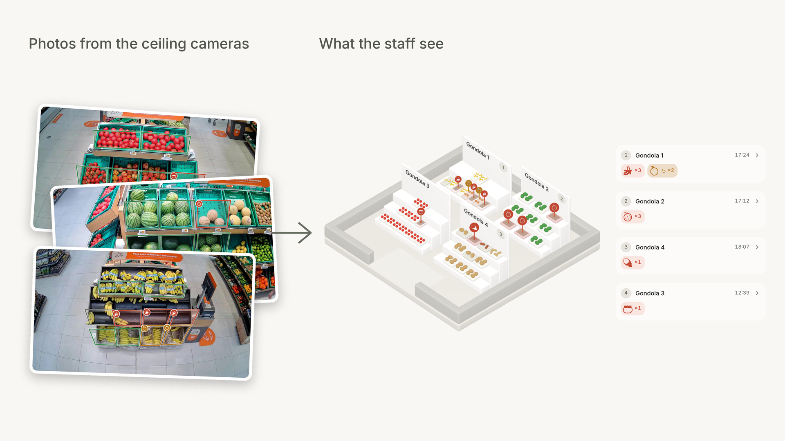
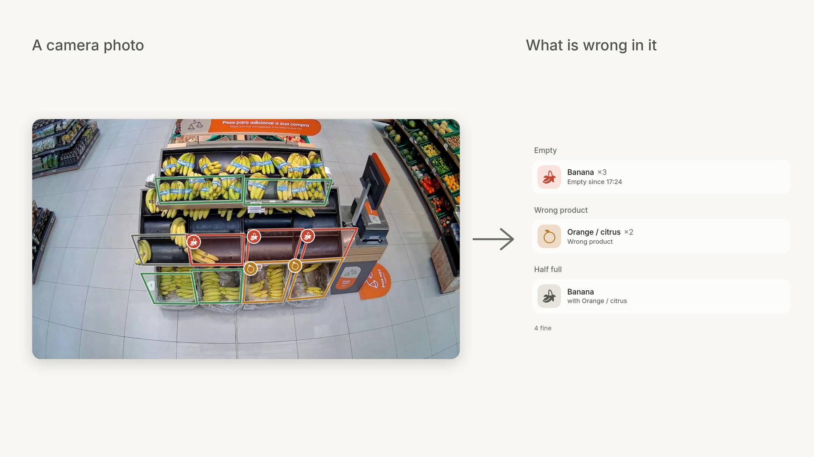
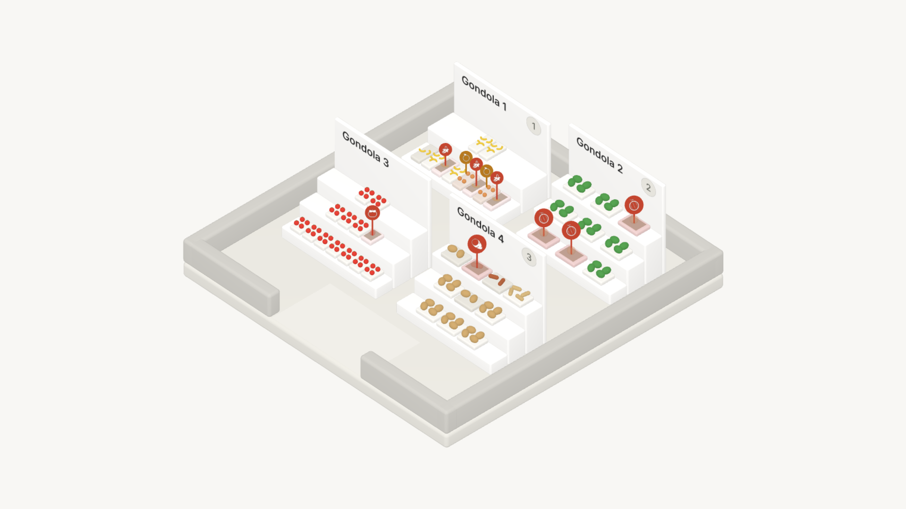
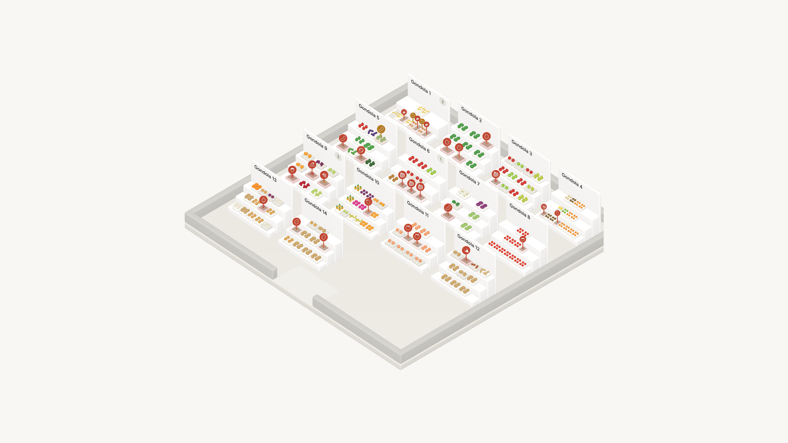
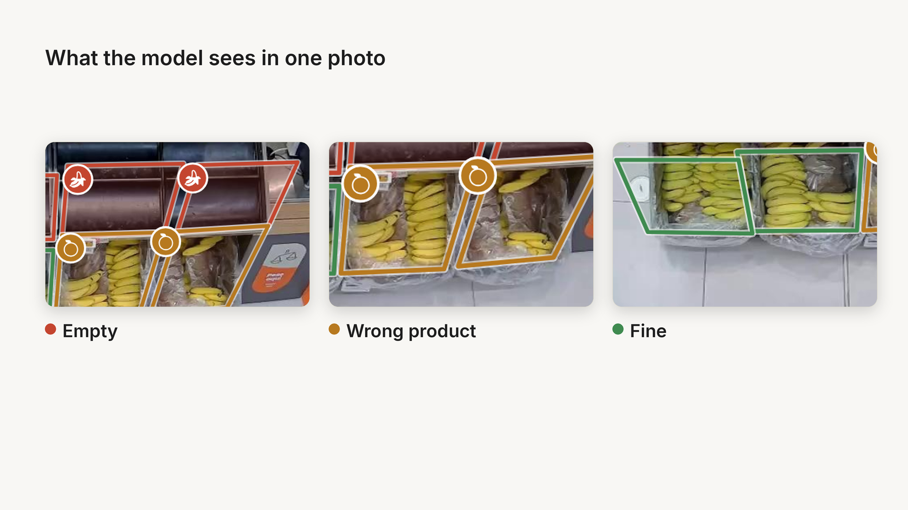
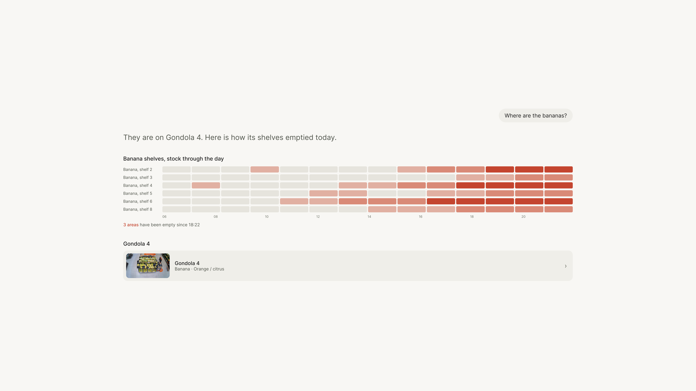

16:9 (1920×1080; la 5 va a 3840×2160). Fondo #f8f7f4, datos reales del modelo. Pulsa una para verla grande.
Las fotos con marcas, la tienda en 3D con 4 góndolas y las paradas, con los números del 3D.

La foto con las marcas del modelo y la lista de problemas en palabras.



Vacío, producto equivocado y correcto, tres recortes de la misma foto.

Dibujada con las piezas de la propia app. Datos de ejemplo.
